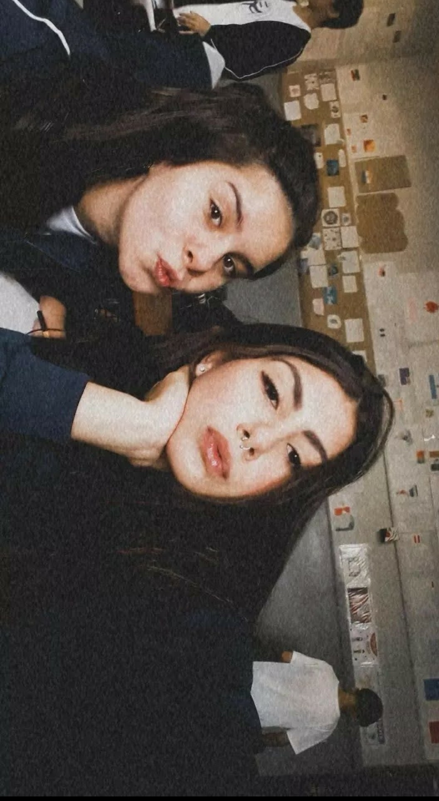

Data: 15.09.2022
Primeira foto tirada com minha amiga no 1° ano do ensino médio.
Nome do Aluno: Sara Rodrigues Ferreira
Turma: 3ºE
Escola Estadual Padre Cláudio Morelli
Primeira foto tirada com minha amiga no 1° ano do ensino médio.
Registro de uma tarde de aula no 2° ano do ensino médio para deixar como recordação com minhas garotas.
Apresentação dos povos indígenas na matéria de sociologia que tivemos a ideia de se representar como indígenas para deixar a apresentação mais divertida.

Registro de um passeio super divertido feito com meus colegas na Volvo, que a escola nos permitiu essa experiência no 1° ano do ensino médio.
Pintando ao ar livre a base da nossa mesa, que foi feita com cano de PVC para a matéria de matemática.
Trabalho de empreendedorismo que tivemos que montar um paper toy que representasse a sustentabilidade, e tive a ideia de fazer o GAARA do anime Naruto.